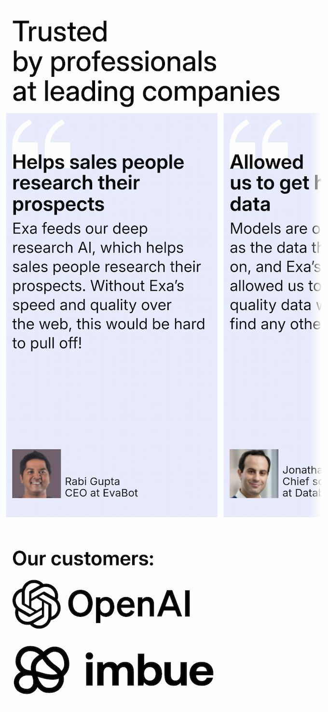
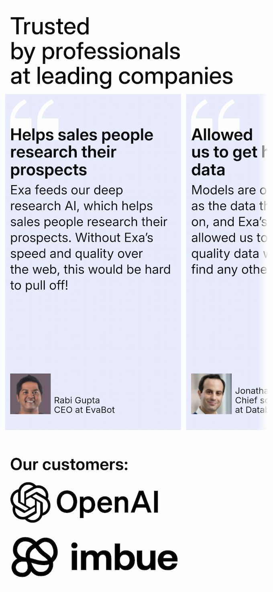
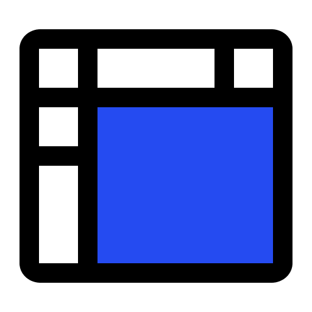
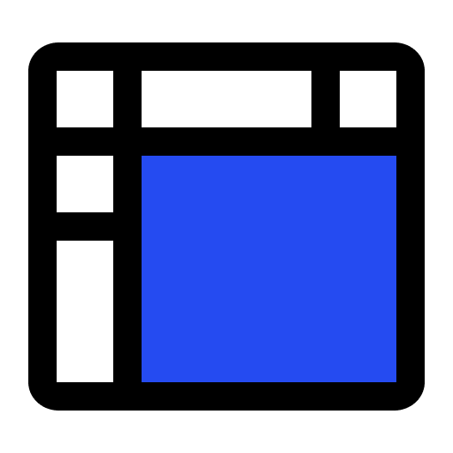

Redesigning Exa's website
Exa is an embeddings-based search engine built by a San Francisco based team. This is a quick concept redesign of its home page to increase the number of API users.
To be clear: This redesign is not affiliated with Exa or endorsed by its creators.
The entire page is designed to not waste the time of users. At the beginning of the page, there is a brief introduction and an immediate invitation to test out the API or search:
Simplified search widget illustrates the power of Exa and invites users to try it out:

The main page consists of blocks, each with a clear function. The blocks contain cards with integration methods, features, or reviews. Whenever possible, the cards provide comprehensive information on the topic, otherwise they lead to such information.
To convey care for the user, banners and cards with offerings of help are scattered throughout the page:


Website adapts nicely to small screens:

 


Illustrations and icons accompany text on the page:


The pillar was adapted from the old design with some stylistic changes like more realistic look, detailed wireframe, and less prominent vertices. The ionian-like pillar is a strong metaphor for human knowledge reminding of the Ancient Greek culture and the Library of Alexandria:
Strings of binary numbers represent the human knowledge transformed into machine knowledge. They also remind of embeddings, streams of data, and datasets. The curved lines represent messy, raw knowledge, while the straight lines represent ordered knowledge -- illustrating what Exa does.
Icons were created from IBM icons:
 
